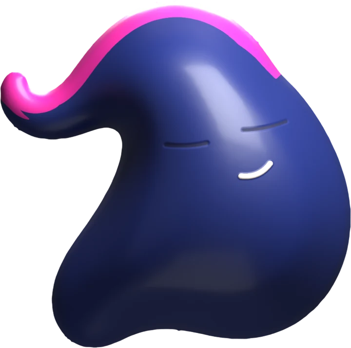
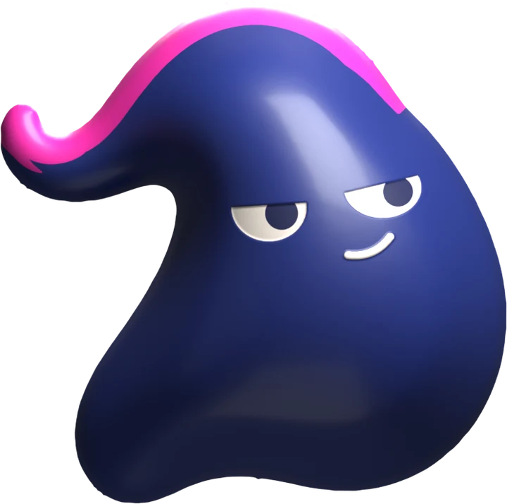
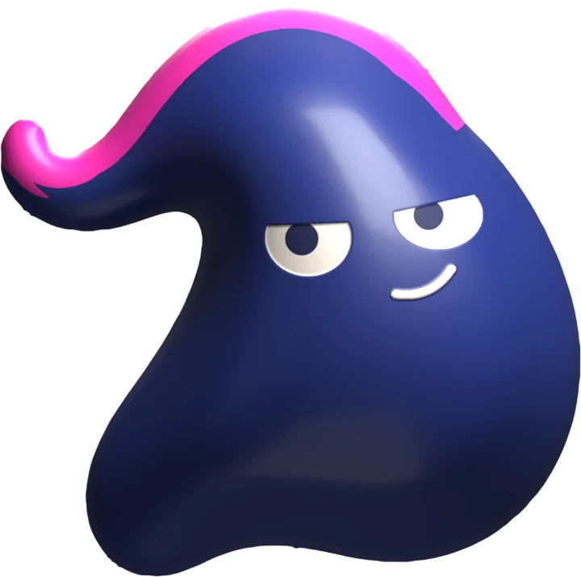
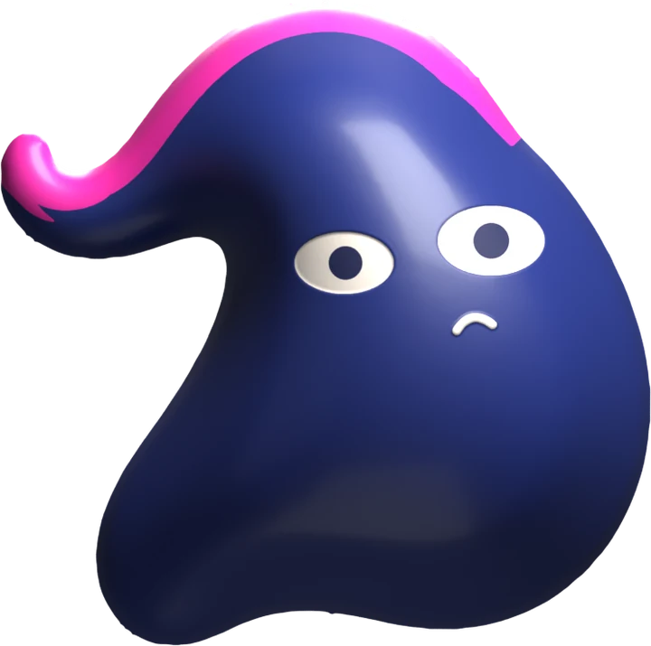
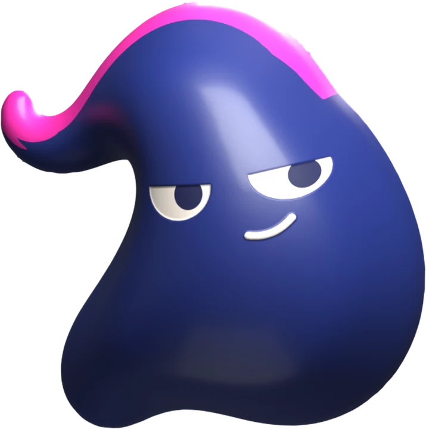

Pool · Round 5 · Drippy
Drippy, in real 3D
Built in Blender from your mockup, so he can turn, blink and change faces on the site instead of being a flat picture. Same shape, same smug face, same stripe.




Your mockupWhat the 3D build is matched to.
His moods
One face per state from your animation files. Only the face changes, so he swaps moods without a jump.
Turning
A gentle turn each way. On the site he would follow the cursor or tilt with your phone, about this much.

Stripe colour
The site is sky with glossy red buttons. Tap the one you like.
Your call
- Does this feel like your Drippy? Anything off in the shape or face?
- Which stripe: D0, D1, D2 or D3?
- Good to put him in the “Meet Drippy” section like this?
Private test page, not linked from the site.